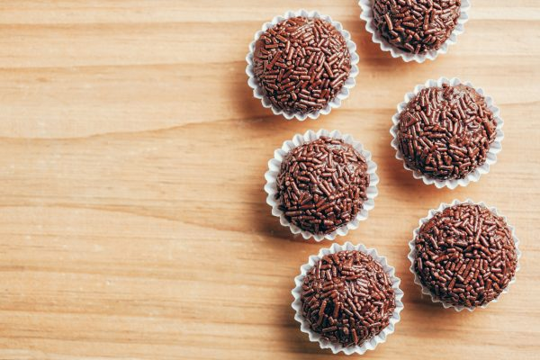

Brigadeiro

Description
This famous sweet is a type of Brazilian Chocolate Confectionery. It's a scrumptious bite-size (or two) chocolate sweet, very popular in Brazil.
Ingridients
- 3 tbsp unsalted butter , plus a little extra
- 400g tin sweetened condensed milk
- 4 tbsp cocoa powder
- 1 tsp vanilla extract
Method
- In a medium heavy-based saucepan, heat the butter, condensed milk, a pinch of salt and the cocoa, to boiling, stirring constantly with a wooden spoon. Reduce the heat to medium-low; cook for 10-15 mins, stirring constantly, until the mixture is thick and shiny and starts to pull away from the bottom.
- Stir in the vanilla and vigorously mix again. Pour the mixture onto a buttered plate. Chill for at least 2 hrs.
- Butter your hands and pinch off some of the dough to make 2.5cm balls. Place your toppings into small bowls and roll the balls of one of the decorations. Place in mini paper baking cups or on a tray lined with non-stick baking paper.